In classical computing, the bit is the fundamental unit of information and the basic building block of digital data. A bit can represent one of two states, typically denoted as 0 or 1. Electronic devices, such as transistors in computer circuits, are well-suited to this binary system, as they can easily build between two states-typically represented by high and low voltage. This binary nature makes bits a natural choice for encoding information in digital systems. The manipulation of bits underpins all digital computation and information processing in classical computers
In quantum computing, the quantum bit, also called qubit, is the fundamental unit of quantum information. Unlike classical bits which can only exist in a definite state of either 0 or 1, a qubit has the unique ability to exist in a superposition of both 0 and 1 simultaneously. This property can perform more complex computation than classical bits. However, When measurements happen on qubits, the superposition collapses, and the qubit assumes a definite state of either 0 or 1. The outcome is probabilistic, introducing an element of uncertainty. The probabilities assigned during the superposition influence the likelihood of the qubit collapsing into a particular state.
In quantum information theory, a quantum state is denoted as |\(\psi\)>. The quantum state corresponding to 0 is represented as |0>, and the quantum state corresponding to 1 is denoted as |1>. Unlike a classical bit which is represented by either 0 or 1, a qubit can exist in both quantum state |0> and |1>, requiring a two-dimensional vector for its representation.
In this representation, the first number of the vector represents the amplitude for the state |0>, and the other represents the amplitude for the state |1>. The computational basis states, which are the most common way to represent a qubit, are given by:
\[ |0> = \begin{pmatrix} 1 \\ 0 \end{pmatrix} , |1> = \begin{pmatrix} 0\\ 1 \end{pmatrix}\]
However, a qubit can also be represented using other orthogonal vector, depending on the context. For example, another representation might involve:\[|0> = \begin{pmatrix} \frac{1}{\sqrt{2}} \\ \frac{1}{\sqrt{2}} \end{pmatrix}, |1> = \begin{pmatrix} \frac{1}{\sqrt{2}} \\ -\frac{1}{\sqrt{2}} \end{pmatrix}\]
This representation is more complex than the first one but is sometimes useful in specific situations. A qubit can be described as a line superposition of two elementary orthogonal states |0> and |1>, capturing all ranges of quantum states. For example, an arbitrary quantum states is given by:
\[|\psi> = \alpha|0> + \beta|1> = \alpha \begin{pmatrix} 1 \\ 0 \end{pmatrix} + \beta \begin{pmatrix} 0 \\ 1 \end{pmatrix} = \begin{pmatrix} \alpha \\ \beta \end{pmatrix}\]
The two coordinates, \(\alpha\) and \(\beta\), are known as qubit amplitudes. These amplitudes determine the probability of the qubit collapsing into a particular quantum state when measurement. Although the outcome of a measurement is not deterministic, but the total probability across all quantum states is certain to equal 1.
When a qubit is measured, the probability of it yielding the quantum state |0> is given by \(|\alpha|^{2}\), and the probability of yielding the quantum state |1> is given by \(|\beta|^{2}\). These probabilities reflect the likelihood of each outcome, with the sum of \(|\alpha|^{2}\) and \(|\beta|^{2}\) being equal to 1, ensuring that all possible outcomes are account for
\[|\alpha|^{2} + |\beta|^{2} = 1\]
In a multi-qubit system, the state of the entire system is described by the combined quantum states of each individual qubit. The state of an n-qubit system is represented as a linear combination of basis states to all possible outcomes of qubits. This system's quantum state can be described by a \(2^n\) dimensional vector, where n is the number of qubits. Each element of this vector corresponds to a possible basis state of the system, with the entire state being a superposition of these basis states. For example, an arbitrary quantum state with an n-qubit system is given by:
\[ |\psi> = \begin{pmatrix} \alpha_{0} \\ \alpha_{1} \\ \vdots \\ \alpha_{2^n - 1} \\ \end{pmatrix} \]
Here, \(\alpha_{0}\) represents the amplitude of the quantum state \(|000....000>\)(the binary representation with n bit of the number 0), \(\alpha_{2^n-1}\) represents the amplitude of the quantum state \(|111....111>\)(the binary representation with n bit of the number \(2^n-1\))
In the case of a 2-qubit system, the basis state |00>, |01>, |10>, and |11> can be denoted as a 4-dimensional vector:
\[|00> = \begin{pmatrix} 1 \\ 0 \\ 0 \\ 0 \\ \end{pmatrix}, |01> = \begin{pmatrix} 0 \\ 1 \\ 0 \\ 0 \\ \end{pmatrix}, |10> = \begin{pmatrix} 0 \\ 0 \\ 1 \\ 0 \\ \end{pmatrix}, |11> = \begin{pmatrix} 0 \\ 0 \\ 0 \\ 1 \\ \end{pmatrix} \]
These vectors form the basis for the 2-qubit system, and a quantum state of this system can be described as a linear combination of these basis vectors. For example, a qubit in a 2-qubit system can be expressed in a superposition of four basis states:
\[|\psi> = \alpha_{00}|00> + \alpha_{01}|01> + \alpha_{10}|10> + \alpha_{11}|11> = \begin{pmatrix} \alpha_{00} \\ \alpha_{01} \\ \alpha_{10} \\ \alpha_{11} \\ \end{pmatrix}\]
Here, \(\alpha_{00}, \alpha_{01}, \alpha_{10}\), and \(\alpha_{11}\) are quantum amplitudes of |00>, |01>, |10>, and |11>,
\[|\alpha_{00}|^{2} + |\alpha_{01}|^{2} + |\alpha_{10}|^{2} + |\alpha_{11}|^{2} = 1\]
Quantum logic Gates, also called quantum gates, are fundamental components in the field of quantum computing. Similar to classical logic gates which are the building blocks of classical circuits, quantum gates are used to construct quantum circuits. These gates manipulate quantum bits, from one quantum state \(|\psi>\) to another state \(|\psi'>\).
For example, consider a quantum gate denoted as U. The relationship between the input quantum state \(|\psi>\) and output state \(|\psi'>\) can be expressed:
\[|\psi'> = U|\psi>\]
Here, the quantum state \(|\psi>\) and \(|\psi'>\) are unitary vectors, so the operator U is unitary. This unitary is the most important property of quantum gates, as it ensures the preservation of probability and the reversibility of quantum operations.
Quantum gates are represented by unitary matrices. The common types of quantum gates include:
X gate: also known as the Pauli-X gate or quantum Not gate, flips the state of a qubit from |0> to |1> and vice versa. It performs the same function as the NOT gate in classical computing, which flips a bit. While the classical NOT gate operates on classical bits, the quantum X gate operates on quantum states.
Because the one-qubit input and output of X gate are represented by vectors, the X gate is expressed as a matrix. This matrix representation of the X gate is a concise way to describe the operation performed by the gate on qubits.
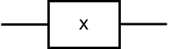The matrix representation of X gate is given by:
\[X = \begin{pmatrix} 0 & 1 \\ 1 & 0 \\ \end{pmatrix}\]
This matrix shows how the gate flips the basis states |0> and |1>. Understanding the matrix representation of quantum gates can be crucial for predicting the final quantum states after complex quantum circuits have been applied.
To illustrate how the X gate operates on a qubit, consider an example where X gate is applied to an input qubit \(|\psi>\).
Suppose the input qubit is in the state:
\[|\psi> = \alpha|0> + \beta|1>\]
where \(\alpha\) and \(\beta\) are complex amplitudes of |0> and |1> respectively.
To find the output state \(\psi'>\) after applying X gate, perform the matrix multiplication of X with the vector representation of \(\psi>\):
\[ \begin{align} |\psi'> &= X|\psi> \\ &= \begin{pmatrix} 0 & 1 \\ 1 & 0 \\ \end{pmatrix} \begin{pmatrix} \alpha \\ \beta \\ \end{pmatrix} \\ &= \begin{pmatrix} \beta \\ \alpha \\ \end{pmatrix} \\ &= \beta|0> + \alpha|1> \end{align} \]
Thus, the outcome state \(|\psi'>\) is:
\[|\psi'> = \beta|0> + \alpha|1>\]
This output shows that the X gate flips the amplitude of |0> and |1>.
Y gate: also known the Pauli-Y gate, introduces a phase shift of 180 degrees when applied to |1>, and -180 degrees when applied to |0>. In other words, Y gate flips the basis states and introduces a complex phase shift.
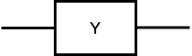The matrix representation of the Y gate is given by:
\[Y = \begin{pmatrix} 0 & -i \\ i & 0 \\ \end{pmatrix}\]
To illustrate the operation of Y gate on a qubit, consider the input qubit state \(|\psi>\).
\[|\psi> = \alpha|0> + \beta|1>\]
After applying Y gate to the input qubit:
\[ \begin{align} |\psi'> &= Y|\psi> \\ &= \begin{pmatrix} 0 & -i \\ i & 0 \\ \end{pmatrix} \begin{pmatrix} \alpha \\ \beta \\ \end{pmatrix}\\ &= \begin{pmatrix} i\beta \\ -i\alpha \\ \end{pmatrix} \\ &= i\beta|0> - i\alpha|1> \end{align} \]
Thus, the outcome state \(|\psi'>\) is:
\[|\psi'> = - i\alpha|1> + i\beta|0>\]
Z gate:, also known as the Paulit-Z gate, introduces a phase flip of 180 degrees when applied to |1>, and no changing when applied to |0>.
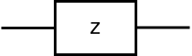The matrix representation of Z gate is given by:
\[Z = \begin{pmatrix} 1 & 0 \\ 0 & -1 \\ \end{pmatrix}\]
To illustrate the operation of the Z gate on a qubit, consider the input qubit \(|\psi>\)
\[|\psi> = \alpha|0> + \beta|1>\]
where \(\alpha\) and \(\beta\) are the amplitude of the quantum state |0> and |1>.
After applying Z gate to the input qubit \(|\psi>\),
\[ \begin{align} |\psi'> &= Z|\psi> \\ &= \begin{pmatrix} 1 & 0 \\ 0 & -1 \\ \end{pmatrix} \begin{pmatrix} \alpha \\ \beta \\ \end{pmatrix} \\ & = \begin{pmatrix} \alpha \\ -\beta \\ \end{pmatrix} \\ &= \alpha|0> - \beta|1> \end{align} \]
Thus, the outcome state \(|\psi'>\) is:
\[|\psi'> = \alpha|0> - \beta|1>\]
Hadamare gate: often denoted as H gate, is a fundamental block used to create superposition states. When applied to a qubit |0> or |1>, the H gate changes the basis state into an equal probability of being |0> and |1>.
The matrix representation of H gate is given by:
\[H = \frac{1}{\sqrt{2}}\begin{pmatrix} 1 & 1 \\ 1 & -1 \\ \end{pmatrix}\]
To illustrate the operation of the H gate on a qubit, Z gate is applied to the input qubit |0> and |1> respectively,
\[|\psi'> = H|0> = \frac{1}{\sqrt{2}}\begin{pmatrix} 1 & 1 \\ 1 & -1 \\ \end{pmatrix} \begin{pmatrix} 1 \\ 0 \\ \end{pmatrix} = \frac{1}{\sqrt{2}}\begin{pmatrix} 1 \\ 1 \\ \end{pmatrix} = \frac{1}{\sqrt{2}}(|0> + |1>)\]
\[|\psi'> = H|1> = \frac{1}{\sqrt{2}}\begin{pmatrix} 1 & 1 \\ 1 & -1 \\ \end{pmatrix} \begin{pmatrix} 0 \\ 1 \\ \end{pmatrix} = \frac{1}{\sqrt{2}}\begin{pmatrix} 1 \\ -1 \\ \end{pmatrix} = \frac{1}{\sqrt{2}}(|0>-|1>)\]
From the outcome, we can see that the H gate creates a superposition when applyied H gate on a qubit |0> or |1>.
We consider a general case, the input qubit \(|\psi>\),
\[|\psi> = \alpha|0> + \beta|1>\]
After applying H gate to the input qubit \(|\psi>\),
\[ \begin{align} |\psi'> &= H(\alpha|0> + \beta|1>) \\ &= \alpha(\frac{1}{\sqrt{2}}(|0> + |1>)) + \beta(\frac{1}{\sqrt{2}}(|0> - |1>)) \\ &=\frac{\alpha+\beta}{\sqrt{2}}|0>+\frac{\alpha-\beta}{\sqrt{2}}|1> \end{align} \]
Here, X, H and Z gate has relations, Z gate obtained by X and H gate, and X gate obtained by Z and H gate. \[ X = HZH \\ Z = HXH \]
Reader can verify the relation between X, H and Z gate through linear algebra.
Rotation X gate: also known as Rx gate, performs a rotation of a qubit around the x-axis by a specified angle \(\theta\).
The matrix representation of Rx gate:
\[R_{x}(\theta) = \begin{pmatrix} \cos\frac{\theta}{2} & -i \sin\frac{\theta}{2} \\ -i \sin\frac{\theta}{2} & \cos\frac{\theta}{2}\\ \end{pmatrix}\]
where \(\theta\) is the angle by which the qubit's state is rotated around the x-axis.
Rotation Y gate: also known as Ry gate, performs a rotation of a qubit around the y-axis by a specified angle \(\theta\).
The matrix representation of Ry gate:
\[R_{y}(\theta) = \begin{pmatrix} \cos\frac{\theta}{2} & -\sin\frac{\theta}{2} \\ \sin\frac{\theta}{2} & \cos\frac{\theta}{2}\\ \end{pmatrix}\]
where \(\theta\) is the angle by which the qubit's state is rotated around the y-axis.
Rotation Z gate: also known as Rz gate, performs a rotation of a qubit around the z-axis by a specified angle \(\theta\).
The matrix representation of Rz gate:
\[R_{z}(\theta) = \begin{pmatrix} e^{-i\frac{\theta}{2}} & 0 \\ 0 & e^{i\frac{\theta}{2}} \\ \end{pmatrix}\]
where \(\theta\) is the angle by which the qubit's state is rotated around the z-axis.
S gate: is a specified z gate, which is a rotation of a qubit about z-axis by \(\pi\).
The matrix representation of S gate:
\[ T = \begin{pmatrix} 1 & 0 \\ 0 & i \end{pmatrix}\]
T gate: is a specified z gate, which is a rotation of a qubit about z-axis by \(\frac{\pi}{2}\).
The matrix representation of T gate:
\[ T = \begin{pmatrix} 1 & 0 \\ 0 & e^{i\frac{\pi}{4}} \end{pmatrix}\]
CNOT gate: the controlled-NOT gate assigns one qubit as the role of control qubit and pairs it with another as the target qubit. The target qubit flips its state when the control qubit is in the state |1>, and remain unchanged when the control qubit is in the state |0>. In classical computing, XOR operation performs a similar function. However, the CNOT gate introduces the superposition and entanglement of quantum mechanics. Unlike classical XOR, the CNOT gate allows qubits to exist in a superposition, representing multiple states simultaneously. The CNOT gate enables entanglement, a fundamental feature of quantum mechanics that allows qubit to be correlated in ways that support quantum parallelism and complex computation.
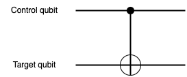The matrix representation of CNOT gate:
\[CNOT = \begin{pmatrix} 1 & 0 & 0 & 0 \\ 0 & 1 & 0 & 0 \\ 0 & 0 & 0 & 1 \\ 0 & 0 & 1 & 0 \\ \end{pmatrix}\]
CNOT gate operation on the computational basis state
CNOT|00> = |00>
CNOT|01> = |01>
CNOT|10> = |11>
CNOT|11> = |10>
The CNOT gate operates the general two-qubit input qubit \(|\psi>\)
\[|\psi>=\alpha_{00}|00> + \alpha_{01}|01> + \alpha_{10}|10> + \alpha_{11}|11>\]
After applying the CNOT gate to the input qubit \(|\psi>\),
\[ \begin{align} |\psi'> &= CNOT(\alpha_{00}|00> + \alpha_{01}|01> + \alpha_{10}|10> + \alpha_{11}|11>) \\ &=\alpha_{00}|00> + \alpha_{01}|01> + \alpha_{10}|11> + \alpha_{11}|10> \end{align} \]
Thus, the output state \(|\psi'>\),
\[|\psi'> =\alpha_{00}|00> + \alpha_{01}|01> + \alpha_{11}|10> + \alpha_{10}|11> \]
SWAP gate: swap the quantum state of two qubits. If the first qubit is in the state |a> and the second qubit is in the state |b>, after applying the SWAP gate, the first qubit is in the state |b> and the second qubit is in the state |a>.
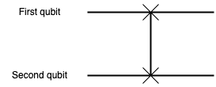The matrix representation of SWAP gate:
\[SWAP = \begin{pmatrix} 1 & 0 & 0 & 0 \\ 0 & 0 & 1 & 0 \\ 0 & 1 & 0 & 1 \\ 0 & 0 & 0 & 1 \\ \end{pmatrix}\]
SWAP gate operation on the computational basis state
SWAP|00>=|00>
SWAP|01>=|10>
SWAP|10>=|01>
SWAP|11>=|11>
The SWAP gate operates the general two-qubit input qubit \(|\psi>\)
\[|\psi>=\alpha_{00}|00> + \alpha_{01}|01> + \alpha_{10}|10> + \alpha_{11}|11>\]
After applying the SWAP gate to the input qubit \(|\psi>\),
\[ \begin{align} |\psi'> &= SWAP(\alpha_{00}|00> + \alpha_{01}|01> + \alpha_{10}|10> + \alpha_{11}|11>) \\ &=\alpha_{00}|00> + \alpha_{01}|10> + \alpha_{10}|01> + \alpha_{11}|11> \end{align} \]
Thus, the output state \(|\psi'>\),
\[|\psi'> =\alpha_{00}|00> + \alpha_{10}|01> + \alpha_{01}|10> + \alpha_{11}|11> \]
SWAP gate can be decomposed into three CNOT gate. This is useful in quantum circuit design, as it allows to be implemented using a series of simpler operations.
The SWAP gate can be expressed as a sequence of three CNOT gates:
\[SWAP = CNOT_{01} \times CNOT_{10} \times CNOT_{01}\]
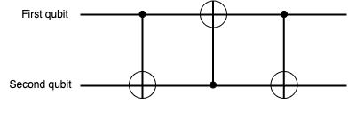\(CNOT_{01}\) is a CNOT gate with the first qubit as control qubit and the second as target qubit.
\(CNOT_{10}\) is a CNOT gate with the second qubit as control qubit and the first as target qubit.
Controlled-U gate: also known as CU gate, uses one qubit as the control qubit to determine whether a unitary gate operation is applied to another qubit. CNOT gate is a specific instance of the CU gate, where the Unitary gate is X gate. In a CU gate, the target qubit remains unchanged when the control qubit is in the state |0>, and the Unitary gate operates the target qubit when the control qubit is in the state |1>. Different unitary gate can be used to create different CU gates, allowing for the construction of complex quantum circuits. But note that not arbitary unitary gate can be used to create CU gates. There are certain limitations for constructing CU gates in quantum computing. Now common unitary gates, like X gate, Y gate, Z gate, and Rotation gate, can be appiled to create specific CU gates. In some cases, some unitary gates that can not be directly used to create CU gates can be decomposed into a combination of common unitary gates, so it is alternative to construct specific CU gates.
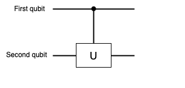The matrix representation of CU gate:
Here, \(I\) is 2 \(\times\) 2 identity matrix, and \(U\) is 2 \(\times\) 2 unitary matrix.
To illustrate the CU gate, consider the two-qubit input state \(|\psi>\),
\[|\psi> = \alpha_{00}|00> + \alpha_{01}|01> + \alpha_{10}|10> + \alpha_{11}|11>\]
The unitary gate of CU is a H gate, so the matrix representation of CU gate is given by,
\[CU = \begin{pmatrix} 1 & 0 & 0 & 0 \\ 0 & 1 & 0 & 0 \\ 0 & 0 & \frac{1}{\sqrt{2}} & \frac{1}{\sqrt{2}} \\ 0 & 0 & \frac{1}{\sqrt{2}} & -\frac{1}{\sqrt{2}} \\ \end{pmatrix}\]
After applying the CU gate to the two-qubit input state,
Thus, the outcome qubit \(|\psi'>\) is,
\[|\psi'> = \alpha_{00}|00> + \alpha_{01}|01> + \frac{\alpha_{10}+\alpha_{11}}{\sqrt{2}}|10> + \frac{\alpha_{10}-\alpha_{11}}{\sqrt{2}}|11>\]
Toffoli gate: also known as the CCNOT gate, assigns two qubits as control qubit and another qubit as target qubit. The target qubit flips when both control qubits are in the state |1>, and otherwise the target qubit remains unchanged.
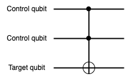The matrix representation of Toffoli gate or CCNOT gate(the first and second qubit as control qubits and the third qubit as target qubit):
\[CCNOT = \begin{pmatrix} 1 & 0 & 0 & 0 & 0 & 0 & 0\\ 0 & 1 & 0 & 0 & 0 & 0 & 0\\ 0 & 0 & 1 & 0 & 0 & 0 & 0\\ 0 & 0 & 0 & 1 & 0 & 0 & 0\\ 0 & 0 & 0 & 0 & 1 & 0 & 0\\ 0 & 0 & 0 & 0 & 0 & 1 & 0\\ 0 & 0 & 0 & 0 & 0 & 0 & 1\\ 0 & 0 & 0 & 0 & 0 & 1 & 0\\ \end{pmatrix}\]
A quantum circuit is a computation model that utilizes a series of quantum gates to perform quantum operations on qubits. Quantum gates manipulate the quantum state of input qubits, producing a final state that represents the result of the computation. Due to the probability, multiple measurements of the quantum state are required to obtain final results.
Compare to classical circuits
For individuals with a background in classical digital circuits, understanding quantum circuits can be intuitive, as both types of circuits involve processing information from the input to output through gates. However, key differences lies in the quantum properties of superposition and entanglement, which allow qubits to exist in multiple states at once and interact in ways that classical bits can not. This lead to the potential for quantum circuits to perform certain computations much more efficiently that their classical counterparts.
There are comparasion between classical and quantum circuits.
1. Basic circuit composition:
▪Classical digital circuits: AND, OR, NOT, and XOR gates that perform classical Boolean operations on bits.
▪Quantum circuits: X, Y, Z, CNOT gates, etc, that acts quantum bits.
2. Flow of Circuits:
▪Classical digital circuits: information flows through the circuit via classical bits, which are always in a definite state of either 0 or 1. The flow of data is deterministic.
▪Quantum circuits: information is carried by qubits, which can exist in a superposition of states. The flow of information is governed by quantum principles, allowing for probabilistic operations.
3. Mathematical Model:
▪Classical digital circuits: Operations are described using boolean algebra, which deals with binary values and logical operations. Computation is based on manipulating bits using well-defined rules
▪Quantum circuits: quantum states are represented by unitary vectors, and quantum gates are described by unitary matrix. Linear algebra is the mathematical framework used to model the behaviour of quantum circuits, including operations like superposition and entanglement.
4. Superposition:
▪Classical digital circuits: process one bit at one time, which each bit having a distinct value of either 0 or 1 at any given moment.
▪Quantum circuits: allow for the parallel manipulation of multiple quantum states because of the principles of superposition and entanglement. A qubit can represent multiple states, enabling quantum circuits to perform calculations at once, leading to potential speedups in certain computations.
In quantum circuits, the progression of computation typically unfolds from left to right, with quantum gates acting on qubit at each step. This is similar to classical circuits, where logical gates manipulates bits sequentially from input to output.
Explore the flow of quantum circuits using a simple quantum circuit from the book, "Classical and Quantum Information Theory: An Introduction for the Telecom Scientist"[1], This example illustrates how quantum circuits operate on qubits.
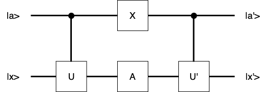Consider the quantum circuit where the state |a> acts as a control qubit, and |x> is another qubit depending on |a>. The circuit uses various quantum gates to produce a final state from the input state. To clarify the process of the quantum circuits, we use two specific states and one common state to obtain the final state.
Case 1: When |a> = |0>,
1. Initial State:
\[|0>|x>\]
2. After applying CU gate:
\[ |0>|x> \xrightarrow{CU} |0>|x> \]
3. After X gate acts on the first qubit and A gate acts on the second qubit:
\[ |0>|x> \xrightarrow{XA} X|0>A|x> = |1>A|x> \]
4. After applying CU' gate:
\[ |1>A|x> \xrightarrow{CU'} |1>U'A|x> \]
Thus, the final state is:
\[ |1>U'A|x> \]
Case 2: When |a> = |1>,
1. Initial State:
\[|1>|x>\]
2. After applying CU gate:
\[ |1>|x> \xrightarrow{CU} |1>U|x> \]
3. After X gate acts on the first qubit and A gate acts on the second qubit:
\[ |1>U|x> \xrightarrow{XA} X|1>AU|x> = |0>AU|x> \]
4. After applying CU' gate:
\[ |0>AU|x> \xrightarrow{CU'} |0>AU|x> \]
Thus, the final state is:
\[ |0>AU|x> \]
Case 3: When |a> = \(\alpha|0> + \beta|1>\),
1. Initial State:
\[(\alpha|0> + \beta|1>)|x>\]
Thus, the final state is:
\[\alpha|1>U'A|x> + \beta|0>AU|x>\]
A Bell state, also known as an entangled state or EPR pair(Einsten-Podolsky-Rosen pair), is a specific type of entangled quantum states involving two qubits that are entangled. They exhibit the phenomenon of entanglement, where the state of one qubit is dependent on the state of the other, no matter how far they are.
Bell states and Bell inequalities
The concept of Bell states is closely associated with Bell inequalities, which were introduced by physicist John Bell in 1964. Bell inequalities provide a way to test whether the correlations observed between entangled particles can be explained by classical physics or if they require a quantum explanation. Violations of Bell inequalities indicate that the system can not be described by local hidden variable theory and confirm the presence of quantum entanglement.
The four bell states
There are four bell states, which are denoted as \(|\Phi^+>, |\Phi^->, |\Psi^+> \text{and} |\Psi^->\). These states are given by:
\[ |\Phi^+\rangle = \frac{1}{\sqrt{2}} \left( |00\rangle + |11\rangle \right) \] \[ |\Phi^-\rangle = \frac{1}{\sqrt{2}} \left( |00\rangle - |11\rangle \right) \] \[ |\Psi^+\rangle = \frac{1}{\sqrt{2}} \left( |01\rangle + |10\rangle \right) \] \[ |\Psi^-\rangle = \frac{1}{\sqrt{2}} \left( |01\rangle - |10\rangle \right) \]Construct Bell States using quantum circuits
Bell states can be constructed using a H gate and a CNOT gate:
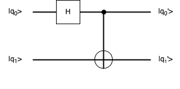1. Initial the input qubit |q0> = |0> and |q1> = |0>,
2. Apply a H gate to the first qubit: creates a superposition,
\[ |0>|0> \xrightarrow{H_{0}} H|0>|0> = \frac{1}{\sqrt{2}}(|0>+|1>)|0> \]3. Apply a CNOT gate, with the first qubit as the control and the second qubit as the target: This entangles the two qubits,
\[ \frac{1}{\sqrt{2}}(|0>+|1>)|0> \xrightarrow{CNOT_{01}} \frac{1}{\sqrt{2}}(|00> + |11>) \]We can get The bell state \(|\Phi^+>\):
\[ |\Phi^+> = \frac{1}{\sqrt{2}}(|00> + |11>) \]Once bell states are prepared, they can be used in various quantum protocols, including quantum teleportation, superdense coding, and quantum cryptography.
Toffoli Gate: it can be constructed using a combination of quantum gates such as H gate, T gate, \(T^\dagger\) gate and CNOT gate. The quantum circuit is given by:
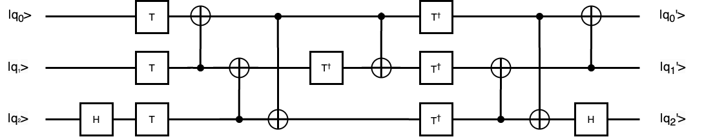Readers can perform the exercise to verify the quantum circuit correctly implements a Toffoli gate.
The add cirucit use CNOT and CCNOT circuits so it is important to know the output state of the target qubit of CNOT and CCNOT.
CNOT gate acts on two qubits, A as control qubit and B as target qubit.
The output state of CNOT = \(|A>|A \oplus B>\)
It is easy to verify it through true table. When A is |0> as control qubit, the output of B(target qubit) is unchanged. When A is |1> as control qubit, the output state of B(target qubit) flips. Therefore, the output state of target is XOR between the state of A and B.
CCNOT gate acts on three qubits, A and B as control qubits and C as target qubit.
The output state of CCNOT = \(|(A \cdot B) \oplus C>\)
We can see A and B as one qubit(\(A \cdot B\)) to control the target qubit so it is the same as CNOT gate.
The quantum circuit of full adder as follows:
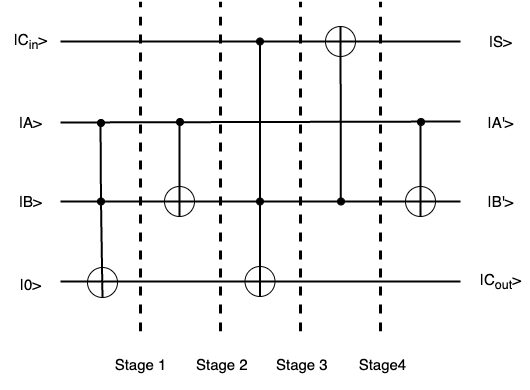We derive the math expression of \(C_{out}\) and S seperately.
From the equation above, we can see the expression state of |S> equals the math one of S of a full adder.
However, the expression of \(C_{out}\) is different from the one of a full adder. We can simply the expression to verify that they are the same one.
We can see the expression of \(|C_{out}>\) equals the \(C_{out}\) of a full adder. Therefore, the quantum full adder circuit can have the function of adding two qubits with carry.
For example, before we use the quantum full adder, we need to prepare the input qubit for the value we want to compute. For example, when A = 0, B = 0, Cin = 1 and A = 1, B = 1, Cin = 1, we need to design quantum circuit to satisfy the condition. I used qiskit simulator to make the quantum circuit and got the measurement outcome of the circuit. The quantum circuit as follows:
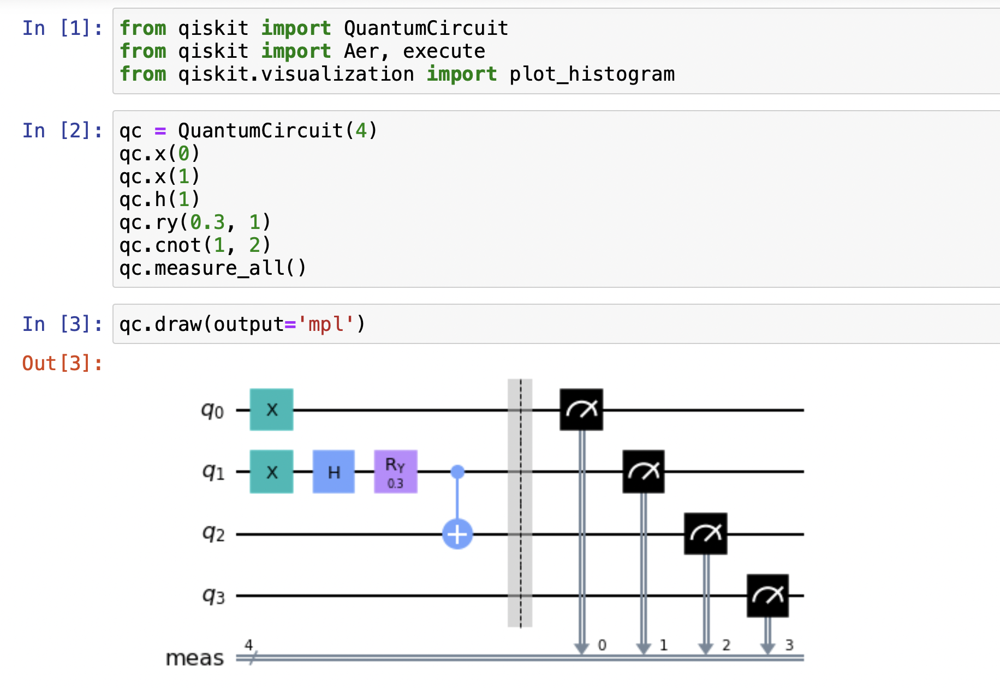 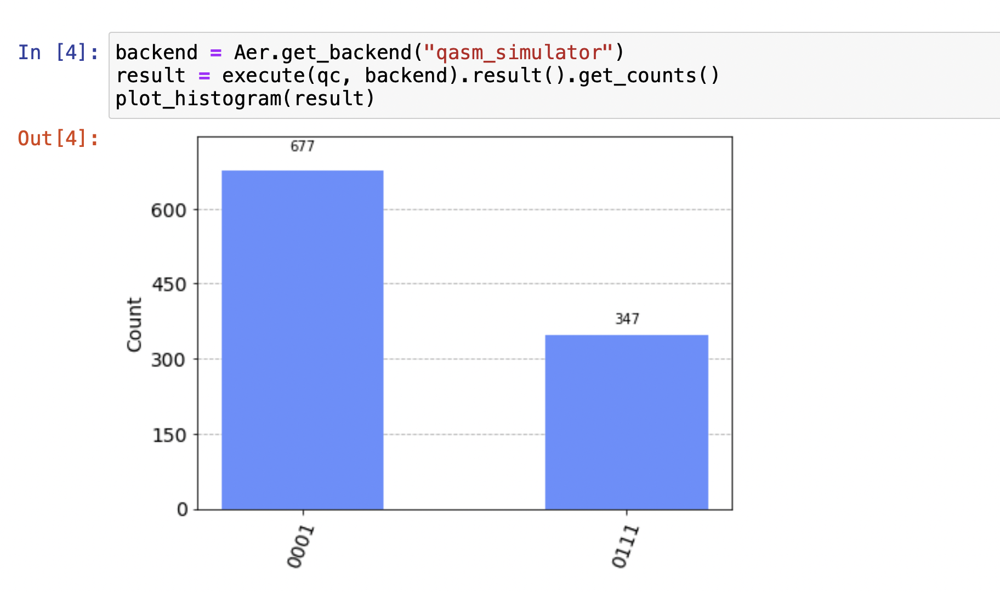The first qubit |q0> is Cin, the second |q2> and third qubits |q3> are A and B, the last qubit |q4> is |0> as the input qubits. We prepared input quantum states, one is |A> = |B> = |0>, |Cin> = |1>, and the other is |A> = |B> = |1>, |Cin> = |1>. In Qiskit, note the first qubit is the rightest one in the figure. The outcome in the figure is |0001> with the probability with 677/1024, and |0111> with 347/1024.
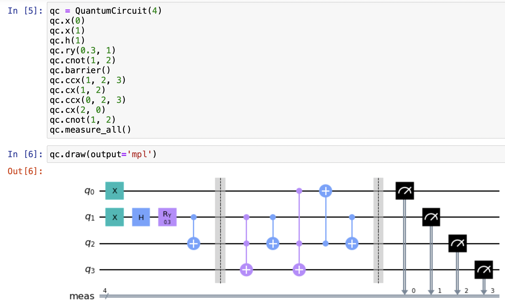 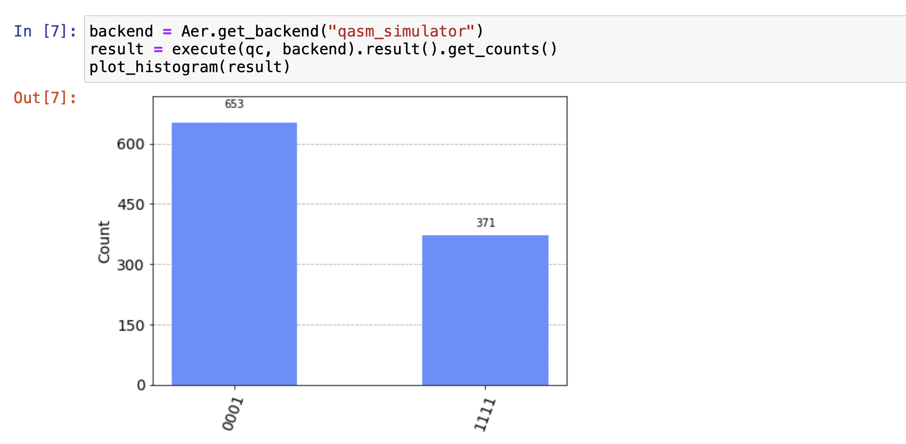In the figure, from the right to left, the first qubit of the final result is the sum of A and B, the second and third one are A and B, and the last one is the carry.
In the figure, |0001> represents the carry is 0 and the sum of A and B is 1 when A = B = 0, and Cin = 1. Its probability is 653/1024 which is close to 677/1024. |1111> represents the carray is the carry is 1 and the sum of A and B is 1 when A = B = 1, and Cin = 1. Its probability is 371/1024 which is close to 647/1024. It means that the quantum circuit can perform the function of a full adder.
The preceding illustration described a one bit full adder. Now, consider the figure below, representing a two bit full adder composed of two such one bit adders, such as A = 01 and B = |11>. This conceptual framework can be extended to design quantum adders for systems involving multiple bits.
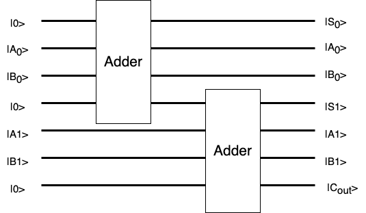When 01 and 11 are as the input of a two bit full adder, it means that |A0> = |1>, |A1> = |0>, |B> = |1>, and |B>=|1>. The Cout of first adder is as the input Cin of the second adder. The output of |S0>, |S1>, and |Cout> represent the first bit and the second bit of Sum (from right to left), and the carry bit value. The sum of 01 and 11 equals 100 so |S0> = |0>, |S1 > = |0> and |Cout> = |1>.
When multiple qubits add respectively, it only prepares the input qubits in superposition. When the sum of the 11 and 01, it prepares |A0> = |1>, |A1> = |1>, |B0> = |1>, and |B1> = |0>. when the sum of the 00 and 10, it prepares |A0> = |0>, |A1> = |0>, |B0> = |0>, and |B1> = |1>. Therefore, |A0>|B0>|A1>|B1> needs to be |1110> and |0001> in the superposition. 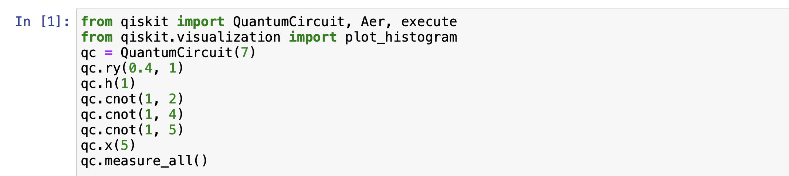 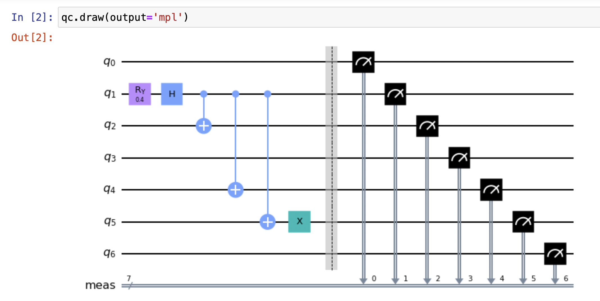 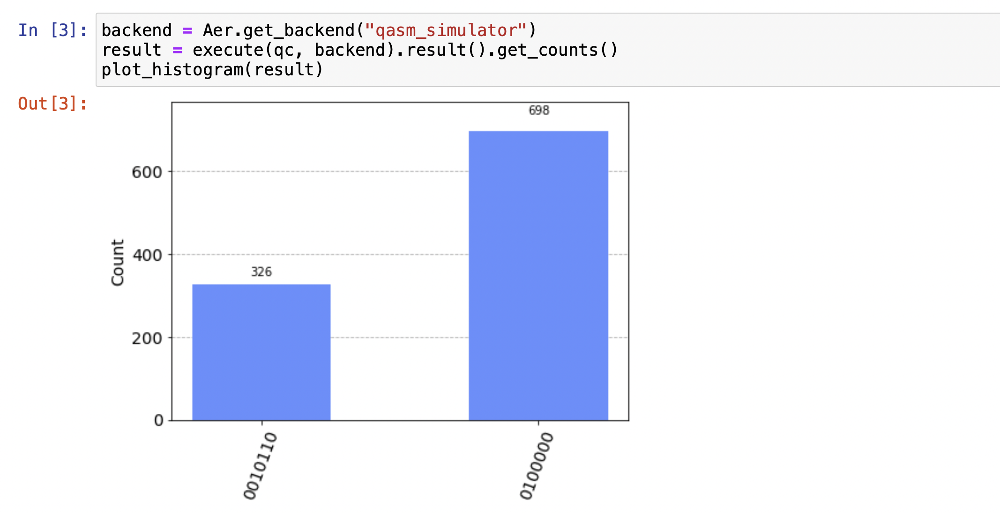
From the outcome of qiskit, qubits are in the superposition with |01100100> and |0000010>(from the right to left in the figure). It illustrates that |A0>|B0>|A1>|B1> is in |1110> and |0001> with the probability of 326/1024 and 698/1024 respectively.
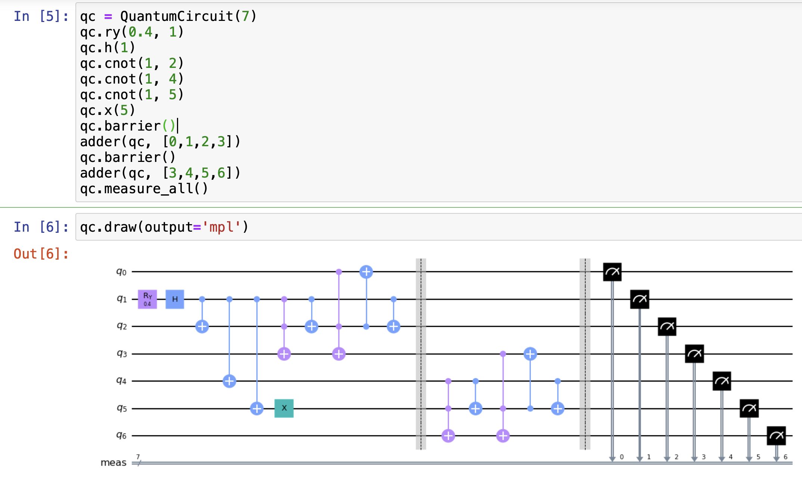 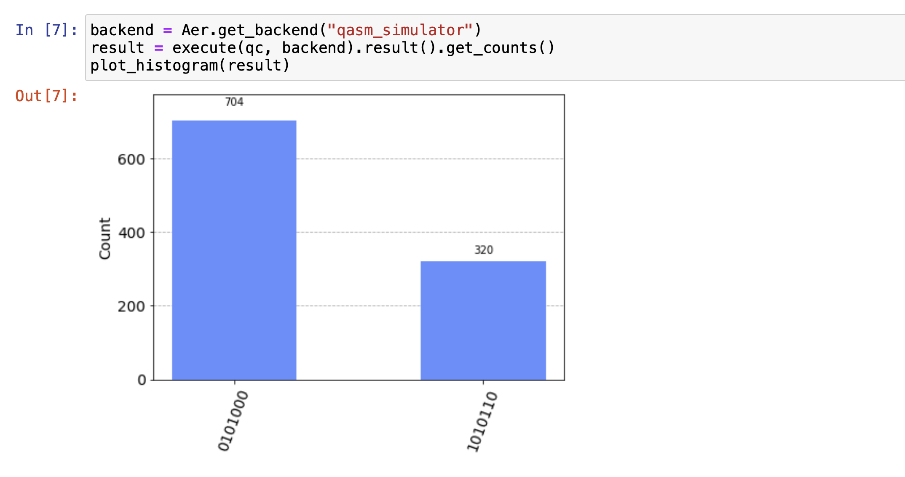The outcome |S0>|A0>|B0>|S1>|A1>|B1>|Cout> in the figure is |0001010> and |0110101>(from the right to left in the figure).
|0001010> is |S0> = |0>, |A0> = |0>, |B0> = |0>, |S1> = |1>, |A1> = |0>, |B1> = |1>, |Cout> = |0>, so it means the sum of 00 and 10 equals 010.
|0110101> is |S0> = |0>, |A0> = |1>, |B0> = |1>, |S1> = |0>, |A1> = |1>, |B1> = |0>, |Cout> = |1>, so it means the sum of 11 and 01 equals 100.
The method of quantum multiplication is to construct two binary number multiplication and full adder. The binary numbers A and B are represented using qubits. Toffoli gate is used to perform multiplication computation between qubits. After multiplication, the results are added together using a quantum full adder. For example, firstly, the binary numbers A(\(A_3A_2A_1A_0\)) and B(\(B_3B_2B_1B_0\)) are encoded by qubits. In the second step, \(B_3A_0\), \(B_2A_0\), \(B_1A_0\), and \(B_0A_0\) are constructed respectively, then the results are added together. The second step is continued to perform repeatedly until all the binary number of A and B are computed.
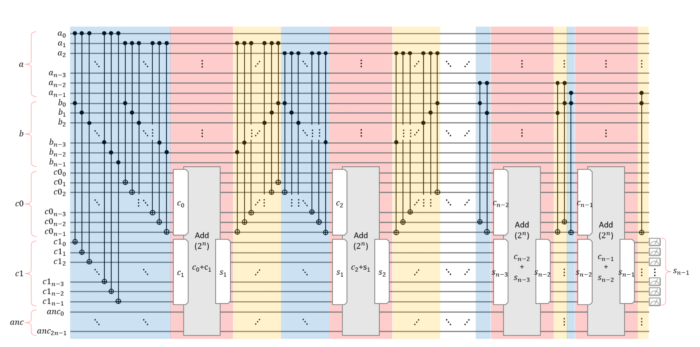In the blue part of the figure, Ai and B0 ... Bn-1 are multiplied respectively using Toffoli gates. In the red part of the figure, a full adder is used to add the outputs of C0 and C1. In the yellow part, the C0 is recovered to the quantum states |000>. This is because it needs to continue to perform Ai and B0 ... Bn-1 multiplication.
For example, I built a quantum circuit to multiple two numbers mod \(2^3\) with the binary length of 3. The first three qubits (q0, q1, q2) encode A, qubits (q3, q4, q5) encodes 8, qubits (q6, q7, q8) represents \(A_i * B_j\), qubits (q9, q10, q11) represents A0 * B0, A0 * B1, A0 * B2, qubits (12, 13, 14) represents the sum of the first addition(A0*B2 A0*B1 A0*B0 + A1*B1 A1*B0), qubit q15 represents the carry, qubits (16, 17, 18) represents the sum of the second addition (qubits(12, 13, 14) + A2*B0), qubit 19 represents the carry. The final result is qubits (16, 17, 18), the carry deleted because it needs to mod 8.
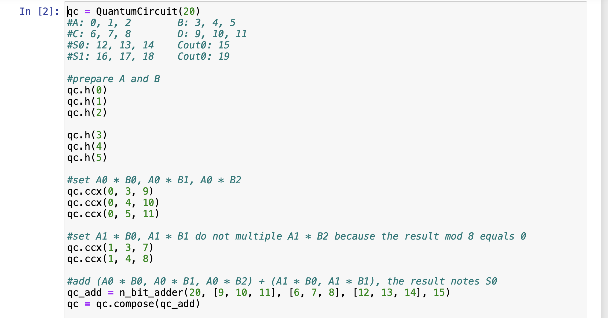 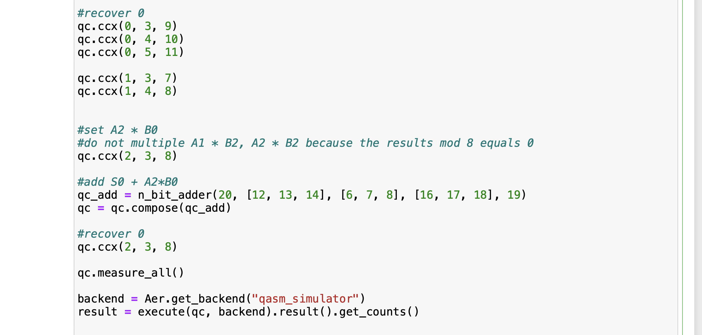 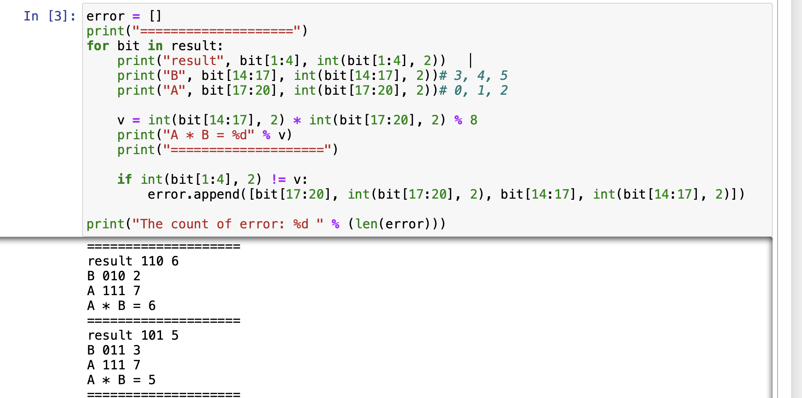Qiskit example lists A and B range from 0 and 15 and the final results mod 8. It requires the number of qubits
\(L_a\) represents the length of the encoding binary string of A or B. \(L_c\) represents the length of the encoding binary string of the final result. In the example, \(L_a\) and \(Lc\) are 3 so the length of qubits is 20.
1. Desurvire, Emmanuel. (2009). Classical and Quantum Information Theory: An Introduction for the Telecom Scientist. 10.1017/CBO9780511803758.
2. Cho, S. M., Kim, A., Choi, D., Choi, B. S., & Seo, S. H. (2020). Quantum modular multiplication. IEEE Access, 8, 213244-213252.
Email: tankzhang19@gmail.com
LinkedIn: linkedin.com/in/zhang-hongfeng-176122270/